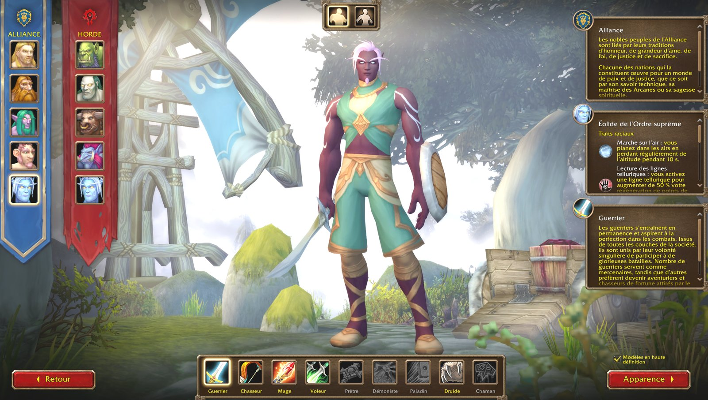
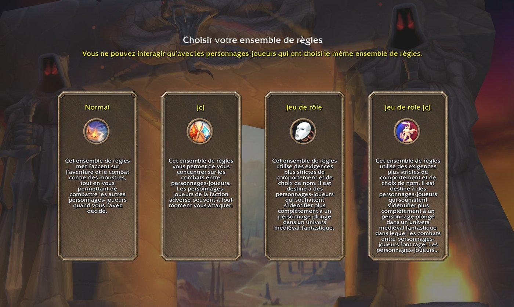
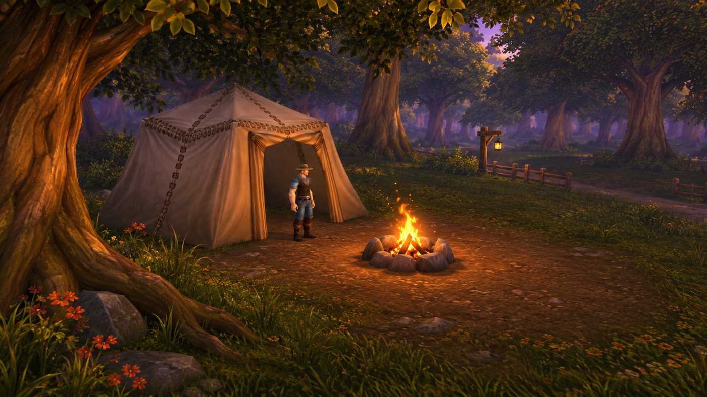

Guide : bien débuter sur WoW Forever
Tout ce qu'un nouveau joueur ou un vétéran de Classic doit savoir pour son premier personnage.
📅 Mise à jour le 4 novembre 2026🛠 Patch 1.60.1.70755

1. Accéder au jeu
Il suffit d'un abonnement WoW actif ou de temps de jeu, puis de lancer Forever depuis Battle.net. Aucun transfert de personnage depuis Classic n'a été annoncé : considérez-le comme un nouveau départ.
2. Choisir son mode de jeu
Quatre règles de jeu : Normal, JcJ, JdR et Hardcore (à venir). Les objets de collection et points Legacy sont partagés entre Normal, JcJ et JdR ; ceux gagnés en Hardcore sont utilisables ailleurs, mais pas l'inverse.

3. Les changements de gameplay à connaître
- Les chances de toucher (sorts, mêlée, distance) sont fusionnées en une seule caractéristique, tout comme les coups critiques.
- Enchaîner les donjons rapporte moins d'expérience : elle est en grande partie déplacée vers les quêtes liées à chaque donjon.
- Des centaines de nouveaux objets dans les anciens et nouveaux donjons.
- Des plans (« Blueprints ») de camp tombent sur les boss de donjon.
4. Le camping

Les feux de cuisine deviennent de vrais feux de camp à installer, pensés pour favoriser les rencontres entre joueurs. Les éléments du camp sont fabriqués grâce aux métiers.